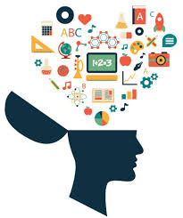
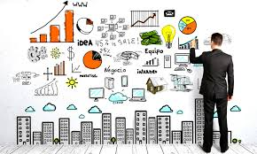
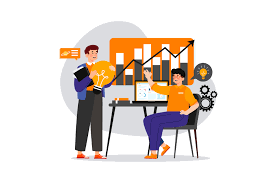
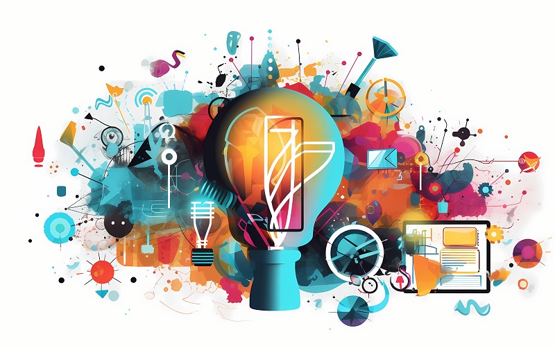
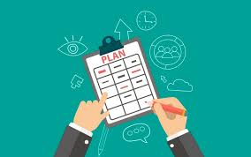

Resiliencia
Capacidad de un sistema o proyecto de adaptarse y continuar operando ante cambios o desafíos inesperados

Capacidad de un sistema o proyecto de adaptarse y continuar operando ante cambios o desafíos inesperados
Capacidad de encontrar soluciones creativas e innovadoras para resolver problemas técnicos o de diseño en ingeniería
Proceso de crear, desarrollar y gestionar proyectos o empresas nuevas, aplicando conocimientos técnicos y estrategias de negocio.
Introducción de nuevos métodos, ideas o productos en el mercado o en procesos, con el fin de mejorar resultados o generar valor.
Capacidad de generar ideas originales y útiles para resolver problemas o mejorar procesos en ingeniería.
Organización y desarrollo de un plan de acción detallado para alcanzar los objetivos de un proyecto de manera eficiente.
